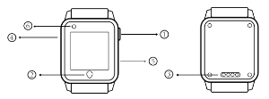
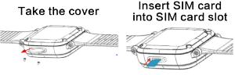
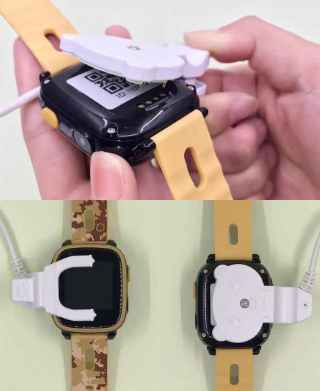

HT-790S Kids Smart Tracker Watch
Watch Introduction

① Multi function button: Power /SOS button，Screen on/off button.
Long press the button to power on the device.
After the device is powered on, if it cannot be normal online(no SIM card or no signal), the device will be turned off.
When the device is normally on line, press the button for 3S,it will start the SOS function.
In powering on, Short press to light up or put out the screen.
② Return button.
③ Charging interface.
④ SIM card cover.
⑤ Torch.
⑥ Camera.
Bind the watch with the APP
1.Install SIM Introduction (Note: SIM card cut by yourself can cause watch cannot detect SIM card or damage the watch). Please refer to following figures for installing SIM card. Before installing SIM card, please ensure the watch powering off.

2.Start the APP: Lite Guardian. Register new account or login existing account, choose "Children watches" to bind the watch.
3.Scan the QR code on the rear cover or enter the watch ID number to bind the device.
4.After binding, you can check and set the watch function from mobile APP.
Functions and instruction
1.Time calibration: please choose your local time zone in the "Watch time and language" interface on the APP.
2.SOS :When the device is on line normally, press button ① for 3S, it will start SOS function, if no one answers, it will dial circularly for two rounds to the three emergency contacts; Any of the three emergency contacts answer the SOS phone, it will stop calling circularly.
3.Contacts book: add 15 contacts via the APP and save, contact book on watch would be synchronized accordingly, and the initial 3 contacts would be default SOS emergency contact person.
4.Phone call: go to contacts book to choose contacts, click on call icon to make phone calls.
5.Medication reminder:can set three alarm clock to remind by the APP.
6.Pedometer: you can check kids' daily activity in the watch.
7.Walkie-talkie function: it enables app to send voice and text message to watch. And watch can also send voice and picture to the APP.
8.Language setting: please choose the language in the "Watch time and language" interface on mobile APP.
9.Additionally, Watch can support taking photo, taking video, learning, torch etc. function. And you can also operate the watch via APP, such as class schedule setting, Language and Time zone setting, Pedometer, Alarm and SMS switch setting, Report interval setting, Positioning, Voice monitor, Image capture, Looking for watch, Powering off the watch remotely, etc.
Charging instruction
Please use the special charging cable in the package to charge, the device supports any popular cell phone charger, we do not supply charger for environment friendly purpose . Please select a suitable charger on your hand for charging.

Accessories
1.A charging cable
2.User manual
3.Screwdriver
FAQ
1.Why can't I power on the device?
A:The battery on your device may be running low during long-time transportation, please charge and try again.
2.Why the watch can not be charged?
A:Please check whether the charger and cable is properly connected with the watch.
3.Fail to scan QR code?
A:Please adjust distance between camera and QR code;or try again in a better place with enough light.
4.I cannot turn off the device by the power/SOS button.
A: Please power off the device from the APP when the device is normally on line. If the device is not on line(no SIM card or run out of data plan), the device will be turned off after you long press the power/SOS button.
5.Why do I press the power/SOS key for a long time, the device will be turned off sometimes?
A:If the device is not on line(no SIM card or run out of data plan), or current signal is very poor, the device will be turned off after you long press the power/SOS button.
6.Why cannot watch connect server, and does APP indicate device has no network?
A: (1) Ensure whether the network mode of Nano SIM card is GSM mode.
(2) Ensure whether the data function has been enabled.
(3) Ensure whether the network parameters are as same as server.
Cautions
1.Please do not immerse the device in water.
2. Please do not incinerate or dispose of in fire or expose to high temperature.
Customer service
Please contact Local Retailer or our After-sales Service Center
Contact information
Welcome to contact with us if you have any queries and recommends.
Overseas
E-mail:sales@castelbds.com
Website:www.lite-guardian.com
Service Tel.:+8675586018742
Hong kong
Service Tel.:+852-26273380
Email:cs-liteguardian@castelbeidou.com
China
Service QQ:3106893070
Service Tel.:0755-8601 8738